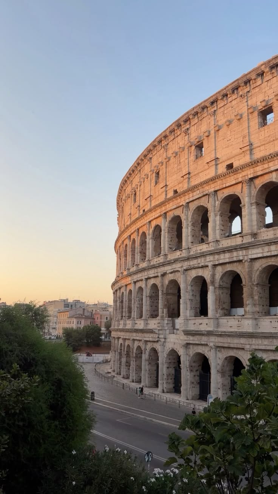
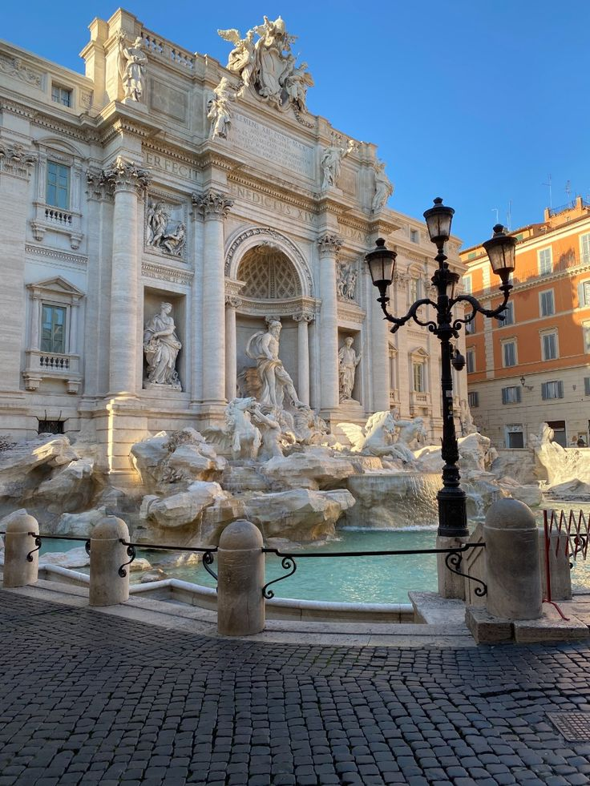
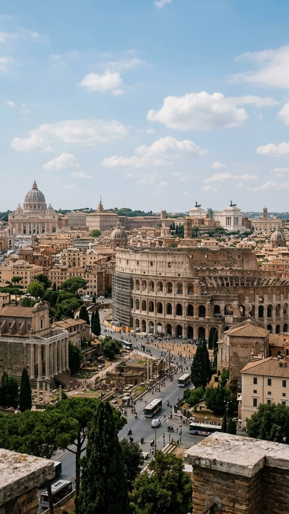

I’ve always wanted to go to Italy after hearing about my parents' trips there. I want to go to so many places all over Italy but especially Rome because of its deep history and culture. Getting to visit all the major locations would be incredible to see and I hope one day I’ll get to experience it all.
Why you should go!
Rome is an incredible destination for travelers interested in history, architecture, food, and beautiful scenery. Often called the Eternal City, Rome allows visitors to step back in time while exploring ancient landmarks such as the Colosseum, Roman Forum, and Pantheon. Travelers can also visit Vatican City, admire the artwork of the Sistine Chapel, and toss a coin into the famous Trevi Fountain. Beyond its historic attractions, Rome is known for its delicious Italian cuisine, charming cobblestone streets, outdoor cafes, and welcoming atmosphere. Whether enjoying authentic pasta, exploring centuries-old architecture, or watching the sunset over the city, Rome offers a travel experience filled with beauty, culture, and history.